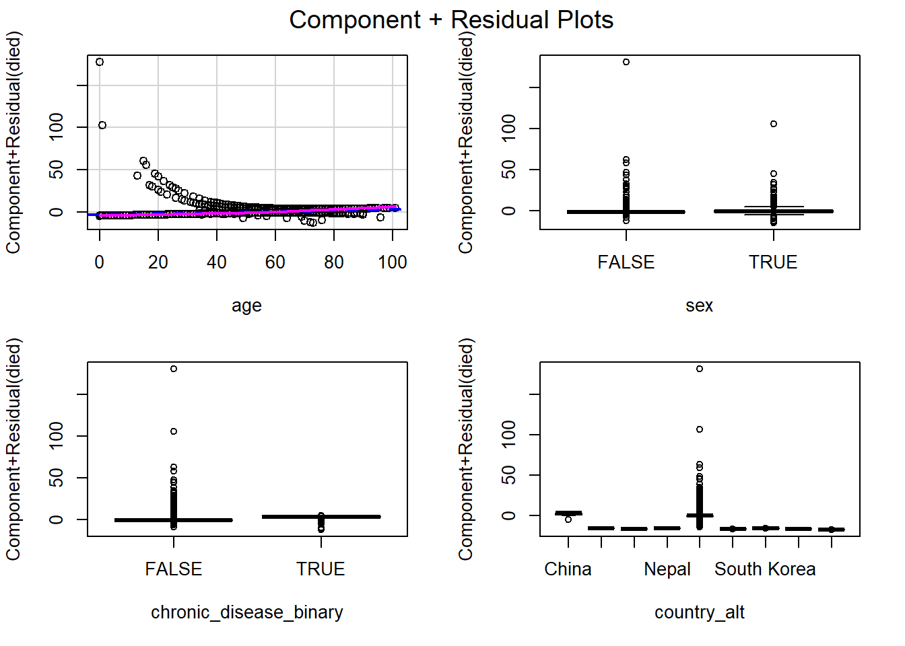
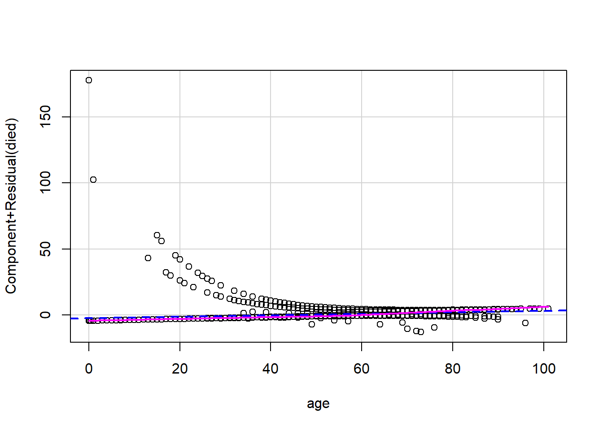
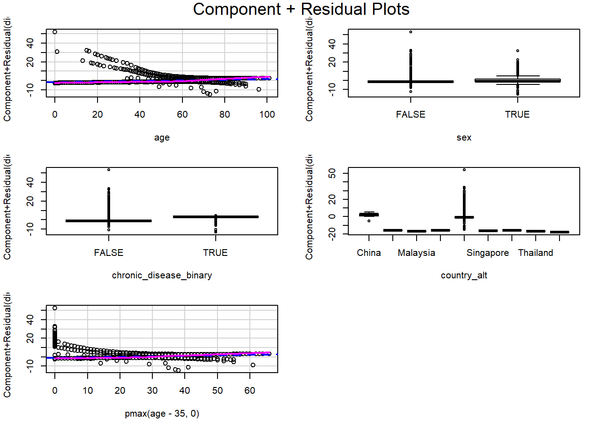
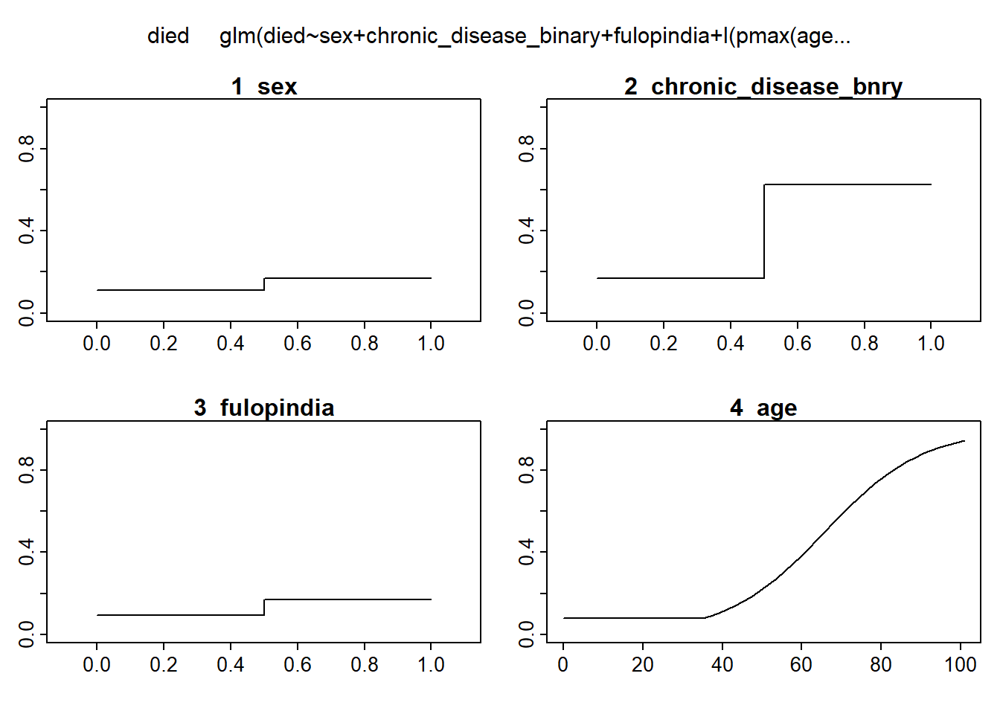
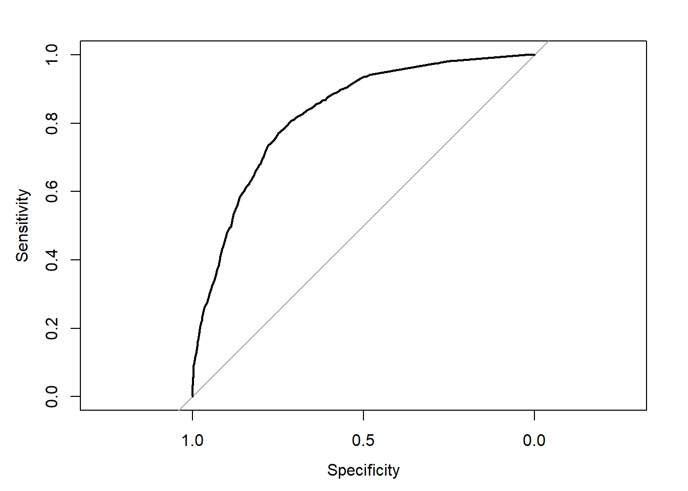
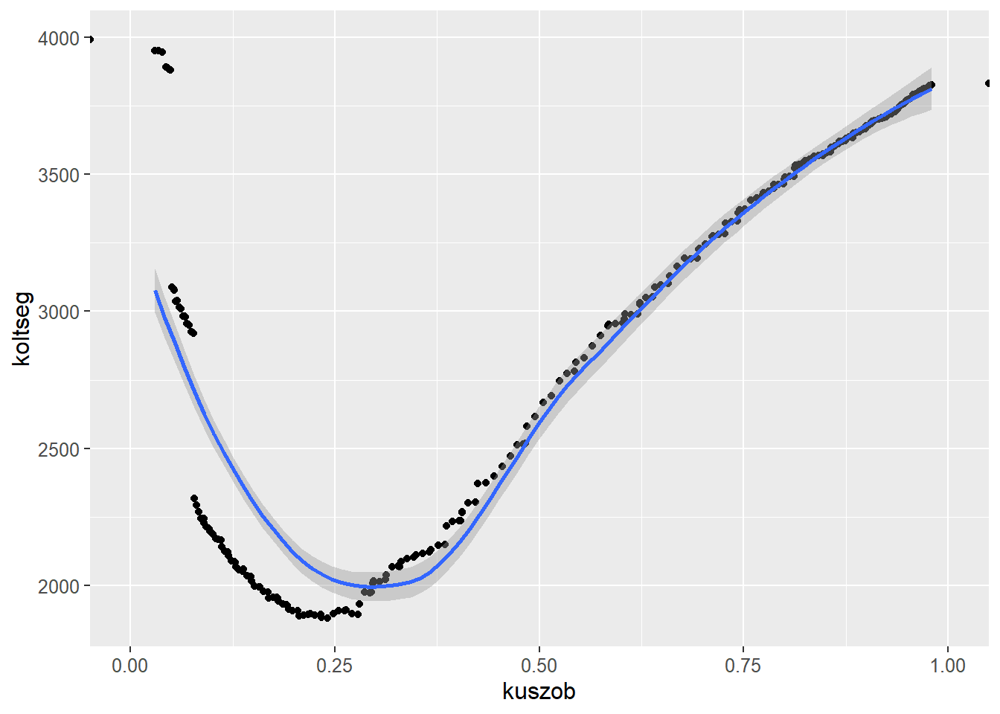

Logit-modell
A logit-modell építése során az a legfontosabb feladatunk, hogy a megfertőződött egyének paraméterei alapján megbecsüljük a halálozásuk valószínűségét. Mint tapasztalhattuk, leginkább az idősebb korosztályt érintette súlyosabban a vírus, de az életkoron kívül felhasználjuk még az országokat, és a nemet is.
A bemutatott adattábla torzítottsága miatt a modellünkben csak ázsiai országok adatait használjuk, így a kontinens változóját nem, csak az országokét használtuk.
Logit modell kalibrálása
Outlierek és VIF mutató szerinti elemzés
Philippines India Singapore China Vietnam South Korea
4503 521 118 76 32 20
Malaysia Japan Nepal
6 4 2 Láthatjuk, hogy a legtöbb megfigyelést Fülöp-szigetek és India adja
A változók tisztításának lépései:
-először az alapmodellünk során kirajzolódott outliereket szűrjük ki
-az országok közül India és a Fülöp-szigetek rendelkezik nagy VIF-mutatóval,
így ezeket összevonjuk, ezzel eltüntetve a magas VIF-értékeket
#Országok közül India és Fülöp-szigetek rendelkezik magas VIF-el
logit <- glm(died~age+sex+country+chronic_disease_binary, data=data_Asia, family=binomial(logit))
summary(logit)
Call:
glm(formula = died ~ age + sex + country + chronic_disease_binary,
family = binomial(logit), data = data_Asia)
Deviance Residuals:
Min 1Q Median 3Q Max
-3.1615 -0.5805 -0.3187 -0.0001 3.2810
Coefficients:
Estimate Std. Error z value Pr(>|z|)
(Intercept) -3.849e+00 3.614e-01 -10.652 < 2e-16 ***
age 6.925e-02 2.634e-03 26.291 < 2e-16 ***
sexTRUE 3.587e-01 8.271e-02 4.337 1.44e-05 ***
countryIndia 1.312e+00 3.504e-01 3.745 0.00018 ***
countryJapan -1.654e+01 1.958e+03 -0.008 0.99326
countryMalaysia -1.717e+01 1.347e+03 -0.013 0.98983
countryNepal -1.629e+01 2.797e+03 -0.006 0.99535
countryPhilippines -1.529e+00 3.325e-01 -4.597 4.29e-06 ***
countrySingapore -1.715e+01 3.343e+02 -0.051 0.95910
countrySouth Korea -1.643e+01 8.259e+02 -0.020 0.98413
countryThailand -1.761e+01 2.797e+03 -0.006 0.99498
countryVietnam -1.880e+01 5.651e+02 -0.033 0.97347
chronic_disease_binaryTRUE 2.331e+00 3.038e-01 7.674 1.67e-14 ***
---
Signif. codes: 0 '***' 0.001 '**' 0.01 '*' 0.05 '.' 0.1 ' ' 1
(Dispersion parameter for binomial family taken to be 1)
Null deviance: 5875.9 on 5283 degrees of freedom
Residual deviance: 3889.3 on 5271 degrees of freedom
AIC: 3915.3
Number of Fisher Scoring iterations: 16 age sexTRUE
1.064698 1.017816
countryIndia countryJapan
7.529853 1.056988
countryMalaysia countryNepal
1.084271 1.028635
countryPhilippines countrySingapore
9.458835 2.610870
countrySouth Korea countryThailand
1.280892 1.028172
countryVietnam chronic_disease_binaryTRUE
1.429719 1.104861 #Outlierek leszűrése
data_Asia <- data_Asia[abs(rstudent(logit))<3, ]
#Indiát és Fülöp-szigeteket összevonva csökken a VIF-mutató
data_Asia$country_alt <- data_Asia$country
data_Asia[data_Asia$country_alt=="India", "country_alt"] <- "Philippines"
logit2 <- glm(died~age+sex+chronic_disease_binary+country_alt, data=data_Asia, family=binomial(logit))
summary(logit2)
Call:
glm(formula = died ~ age + sex + chronic_disease_binary + country_alt,
family = binomial(logit), data = data_Asia)
Deviance Residuals:
Min 1Q Median 3Q Max
-2.3211 -0.6536 -0.3621 -0.0001 3.2244
Coefficients:
Estimate Std. Error z value Pr(>|z|)
(Intercept) -3.799e+00 3.607e-01 -10.531 < 2e-16 ***
age 7.146e-02 2.532e-03 28.224 < 2e-16 ***
sexTRUE 4.709e-01 7.723e-02 6.098 1.07e-09 ***
chronic_disease_binaryTRUE 2.129e+00 3.218e-01 6.617 3.66e-11 ***
country_altJapan -1.678e+01 1.954e+03 -0.009 0.993
country_altMalaysia -1.739e+01 1.298e+03 -0.013 0.989
country_altNepal -1.652e+01 2.797e+03 -0.006 0.995
country_altPhilippines -1.394e+00 3.358e-01 -4.152 3.30e-05 ***
country_altSingapore -1.736e+01 3.304e+02 -0.053 0.958
country_altSouth Korea -1.664e+01 8.145e+02 -0.020 0.984
country_altThailand -1.788e+01 2.797e+03 -0.006 0.995
country_altVietnam -1.891e+01 5.621e+02 -0.034 0.973
---
Signif. codes: 0 '***' 0.001 '**' 0.01 '*' 0.05 '.' 0.1 ' ' 1
(Dispersion parameter for binomial family taken to be 1)
Null deviance: 5835.2 on 5267 degrees of freedom
Residual deviance: 4348.6 on 5256 degrees of freedom
AIC: 4372.6
Number of Fisher Scoring iterations: 16 age sexTRUE
1.047368 1.010986
chronic_disease_binaryTRUE country_altJapan
1.090713 1.057938
country_altMalaysia country_altNepal
1.085748 1.029110
country_altPhilippines country_altSingapore
3.546896 2.639480
country_altSouth Korea country_altThailand
1.285864 1.028649
country_altVietnam
1.438922 Nemlinearitás vizsgálata a RESET-teszttel
A linearitás teszteléséhez felhasználtuk a Ramsey-féle RESET-tesztet és a CR-plotokat. Ezek alapján pedig a jelenlegi modellünk nemlineáris, amely miatt az életkor változót alakítjuk át.
Először az életkor átalakításával próbálkoztunk:
1. 35-nél megtörő CR-plot miatt annak bevétele a modellbe
2. ötvenfelett dummy létrehozása
Mivel az első módszer sikerre vezetett, a másodikat nem próbáltuk meg.
#Linearitás tesztelése megmutatja, hogy még nem lineáris a modell
resettest(logit2, type="regressor")
RESET test
data: logit2
RESET = 22.451, df1 = 6, df2 = 5250, p-value < 2.2e-16

#Az életkor változó nagyjából 35 évnél törik meg, ezt kell belevennünk a modellbe
logit3 <- glm(died~age+sex+chronic_disease_binary+country_alt+pmax(age-35,0), data=data_Asia, family=binomial(logit))
summary(logit3)
Call:
glm(formula = died ~ age + sex + chronic_disease_binary + country_alt +
pmax(age - 35, 0), family = binomial(logit), data = data_Asia)
Deviance Residuals:
Min 1Q Median 3Q Max
-2.34145 -0.63063 -0.37089 -0.00011 2.82050
Coefficients:
Estimate Std. Error z value Pr(>|z|)
(Intercept) -2.58076 0.53148 -4.856 1.20e-06 ***
age 0.03218 0.01329 2.421 0.01547 *
sexTRUE 0.47988 0.07761 6.183 6.28e-10 ***
chronic_disease_binaryTRUE 2.13050 0.32237 6.609 3.88e-11 ***
country_altJapan -16.72685 1967.29686 -0.009 0.99322
country_altMalaysia -17.54875 1417.57052 -0.012 0.99012
country_altNepal -16.49485 2797.44196 -0.006 0.99530
country_altPhilippines -1.37796 0.33313 -4.136 3.53e-05 ***
country_altSingapore -17.36252 335.74122 -0.052 0.95876
country_altSouth Korea -16.67985 837.13291 -0.020 0.98410
country_altThailand -17.81103 2797.44196 -0.006 0.99492
country_altVietnam -18.97497 575.60639 -0.033 0.97370
pmax(age - 35, 0) 0.04405 0.01491 2.955 0.00313 **
---
Signif. codes: 0 '***' 0.001 '**' 0.01 '*' 0.05 '.' 0.1 ' ' 1
(Dispersion parameter for binomial family taken to be 1)
Null deviance: 5835.2 on 5267 degrees of freedom
Residual deviance: 4340.9 on 5255 degrees of freedom
AIC: 4366.9
Number of Fisher Scoring iterations: 16
RESET test
data: logit3
RESET = 0.44526, df1 = 8, df2 = 5247, p-value = 0.8943
linearHypothesis(logit3, c("country_altJapan=0", "country_altMalaysia=0", "country_altNepal=0", "country_altVietnam=0", "country_altSingapore=0", "country_altSouth Korea=0", "country_altThailand=0"))Linear hypothesis test
Hypothesis:
country_altJapan = 0
country_altMalaysia = 0
country_altNepal = 0
country_altVietnam = 0
country_altSingapore = 0
country_altSouth Korea = 0
country_altThailand = 0
Model 1: restricted model
Model 2: died ~ age + sex + chronic_disease_binary + country_alt + pmax(age -
35, 0)
Res.Df Df Chisq Pr(>Chisq)
1 5262
2 5255 7 0.0045 1Ezután a nem szignifikáns változók közül az országokat látjuk csak, így ezek összevont elhagyását teszteljük, a Fülöp-szk. és Indiát kivéve.
Mivel a tesztnél p>0,05, így ezeket a változót kidobhatjuk, az új dummyval pedig elkészült a modellünk.
Az új modellben viszont az életkor változó átalakított formájában magas VIF-et okoz, így az eredeti életkort - amely a kevésbé szignifikáns változó - kihagyjuk a modellből.
logit4 <- glm(died~age+sex+chronic_disease_binary+fulopindia+I(pmax(age-35,0)),
data=data_Asia, family=binomial(logit))
summary(logit4)
Call:
glm(formula = died ~ age + sex + chronic_disease_binary + fulopindia +
I(pmax(age - 35, 0)), family = binomial(logit), data = data_Asia)
Deviance Residuals:
Min 1Q Median 3Q Max
-2.3283 -0.6371 -0.3751 -0.2097 2.8072
Coefficients:
Estimate Std. Error z value Pr(>|z|)
(Intercept) -4.56944 0.47649 -9.590 < 2e-16 ***
age 0.03081 0.01328 2.319 0.02039 *
sexTRUE 0.46982 0.07694 6.107 1.02e-09 ***
chronic_disease_binaryTRUE 2.09148 0.29034 7.203 5.87e-13 ***
fulopindiaTRUE 0.64892 0.21725 2.987 0.00282 **
I(pmax(age - 35, 0)) 0.04610 0.01490 3.095 0.00197 **
---
Signif. codes: 0 '***' 0.001 '**' 0.01 '*' 0.05 '.' 0.1 ' ' 1
(Dispersion parameter for binomial family taken to be 1)
Null deviance: 5835.2 on 5267 degrees of freedom
Residual deviance: 4428.9 on 5262 degrees of freedom
AIC: 4440.9
Number of Fisher Scoring iterations: 5
RESET test
data: logit4
RESET = 0.41565, df1 = 10, df2 = 5252, p-value = 0.9399 age sexTRUE
13.751477 1.008184
chronic_disease_binaryTRUE fulopindiaTRUE
1.057303 1.020537
I(pmax(age - 35, 0))
13.803814 Linear hypothesis test
Hypothesis:
age = 0
Model 1: restricted model
Model 2: died ~ age + sex + chronic_disease_binary + fulopindia + I(pmax(age -
35, 0))
Res.Df Df Chisq Pr(>Chisq)
1 5263
2 5262 1 5.3783 0.02039 *
---
Signif. codes: 0 '***' 0.001 '**' 0.01 '*' 0.05 '.' 0.1 ' ' 1logit_final <- glm(died~sex+chronic_disease_binary+fulopindia+I(pmax(age-35,0)),
data=data_Asia, family=binomial(logit))
summary(logit_final)
Call:
glm(formula = died ~ sex + chronic_disease_binary + fulopindia +
I(pmax(age - 35, 0)), family = binomial(logit), data = data_Asia)
Deviance Residuals:
Min 1Q Median 3Q Max
-2.3423 -0.6262 -0.4012 -0.2523 2.4918
Coefficients:
Estimate Std. Error z value Pr(>|z|)
(Intercept) -3.614952 0.227491 -15.891 < 2e-16 ***
sexTRUE 0.475936 0.077004 6.181 6.38e-10 ***
chronic_disease_binaryTRUE 2.097687 0.291009 7.208 5.66e-13 ***
fulopindiaTRUE 0.659963 0.217446 3.035 0.0024 **
I(pmax(age - 35, 0)) 0.080474 0.002715 29.641 < 2e-16 ***
---
Signif. codes: 0 '***' 0.001 '**' 0.01 '*' 0.05 '.' 0.1 ' ' 1
(Dispersion parameter for binomial family taken to be 1)
Null deviance: 5835.2 on 5267 degrees of freedom
Residual deviance: 4435.0 on 5263 degrees of freedom
AIC: 4445
Number of Fisher Scoring iterations: 5 sexTRUE chronic_disease_binaryTRUE
1.007962 1.056893
fulopindiaTRUE I(pmax(age - 35, 0))
1.017931 1.044902
RESET test
data: logit_final
RESET = 0.31875, df1 = 8, df2 = 5255, p-value = 0.9593 (Intercept) sexTRUE
0.02691822 1.60952006
chronic_disease_binaryTRUE fulopindiaTRUE
8.14730002 1.93472091
I(pmax(age - 35, 0))
1.08380014 plotmo grid: sex chronic_disease_binary fulopindia age
TRUE FALSE TRUE 46
Az átalakított modellünk megfelel minden feltevésnek és tesztnek, így ennek
együtthatóit értelmezhetjük:
-cet. par. a férfi lét 1,61-szeresére növeli a halálozás oddsának értékét
-cet. par. a krónikus betegség megléte 8,15-szeresére növeli a halálozás oddsának értékét
-cet. par. a Fülöp-szk-n vagy Indiában való állampolgárság 1,95-szeresére növeli a halálozás oddsának értékét
-cet. par. a 35 évnél idősebb embereknek 1,08-szor nagyobb a halálozás oddsának értéke
Előrejelzés a kiválasztott modellel
deathval <- predict(logit_final, data_Asia, type="response")
data_Asia$deathval <- deathval
data_Asia$becsult <- ifelse(deathval>0.5, "TRUE", "FALSE")
xtabs(~died+becsult, data=data_Asia) becsult
died FALSE TRUE
FALSE 3674 317
TRUE 766 511A próba 50%-os cutoff értéknél a modell 79.4419134%-ban helyes eredményt ad.

Az ROC-görbe GINI-mutatója 0.6554136. A modellünk kalibrálása során a másodfajú hiba súlya 3, így a simított költségfüggvény alapján a 0.2960607 lesz az optimális küszöbérték.
becsult_final
died FALSE TRUE
FALSE 3197 794
TRUE 405 872Az optimális küszöbértéknél a klasszifikáció pontossága 77.2399393% lesz.